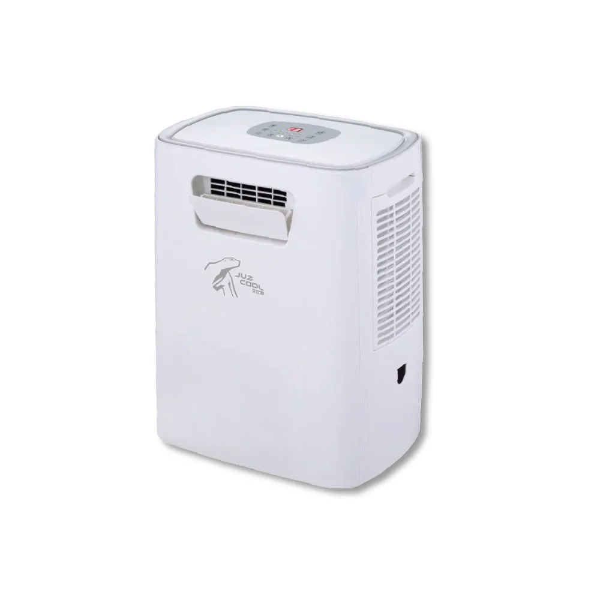
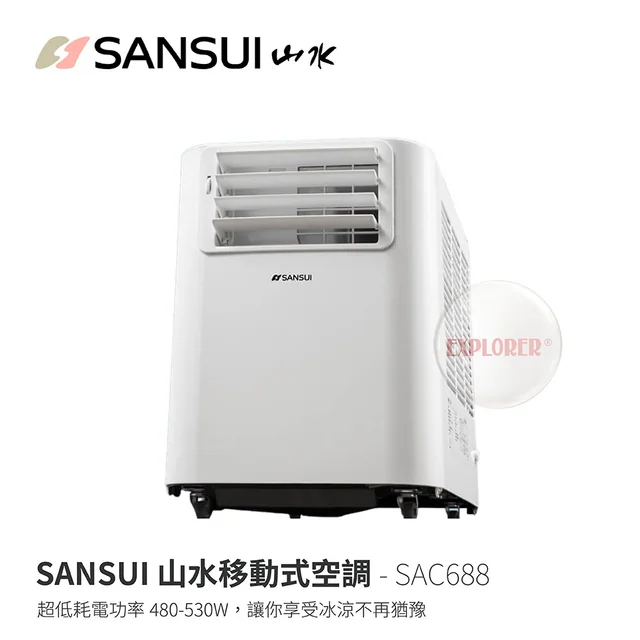

露營冷氣選機比較
JUZ-400 與 SAC688
哪一台適合你的帳篷？
3×3 以下睡帳、1–4 人可先看 JUZ-400；超過 3×3 的大帳、4 人以上、寵物同帳或較怕熱，可先看 SAC688。開放式客廳帳與天幕不適合用移動冷氣降溫。
整理我的租借需求
JUZ-400

SAC-688
規格與使用情境一起比較
| 比較項目 | 艾比酷 JUZ-400 | 山水 SAC688 |
|---|---|---|
| 冷房能力 | 5100 BTU | 6300 BTU |
| 約略功率 | 425W | 530W |
| 帳篷與人數 | 3×3 以下睡帳、1–4 人 | 超過 3×3 大帳、4 人以上 |
| 選擇重點 | 輕量、免排水，適合一般小睡帳 | 冷房需求較高、大帳、寵物同帳或怕熱 |
| 兩天一夜租金 | NT$1,000 | NT$1,000 |
| 三天兩夜租金 | NT$1,300 | NT$1,300 |
| 押金 | 每台 NT$3,000 | 每台 NT$3,000 |
| 完整機型資訊 | JUZ-400 詳細說明 | SAC688 詳細說明 |
每延長一天加 NT$300。冷房效果仍受日照、帳篷隔熱與密閉程度影響；租借檔期及實際機型需先透過 LINE 確認。
租之前，先確認這三件事
- 帳篷大小與睡覺人數：提供帳篷型號、長寬、人數，以及是否有寵物同帳。
- 營區是否允許：有插座不等於允許使用冷氣，先詢問營主並確認同迴路設備。
- 取還地點與日期：內湖、士林、五股、竹北、新竹與台中西屯採預約取件，目前不提供宅配、郵寄或直接送到營區。
常見選機問題
功率比較低，就一定不會跳電嗎？
不能只看冷氣功率。同一迴路若同時使用電熱水壺、吹風機或電磁爐，仍可能超載；需核對營區供電與同迴路設備。
是不是直接選 SAC688 就好？
先看帳篷、取還安排與檔期。小睡帳可先比較 JUZ-400；大帳、人數多或怕熱時，再確認 SAC688 是否適合。不確定就傳帳篷資料詢問。
可以先預約，之後再決定機型嗎？
請先提供日期與帳篷需求，由客服核對可安排機型；網站閱讀或整理訊息不代表庫存已保留。
把需求說清楚，再確認租借
傳送帳篷型號、睡覺人數、營區名稱、取還日期與希望取機地點，方便一起確認合適機型。
LINE 詢問